Toolformer (2023-02)
Language Models Can Teach Themselves to Use Tools

Meta AI Research recently published the paper Toolformer: Language Models Can Teach Themselves to Use Tools to overcome the limitations of today’s LLMs.
Many who have played with ChatGPT realize that it hallucinates from time to time. In other words, it generates texts containing factually wrong information. Yann LeCun also pointed out the weakness of LLMs in a series of tweets.
LLMs have no physical intuition as they are trained exclusively on text.
— Yann LeCun (@ylecun) January 27, 2023
They may correctly answer physical intuition questions if they can retrieve answers to similar questions from their vast associative memory.
But they may get the answer completely wrong
1/ pic.twitter.com/qtrbc4UrIY
When training LLMs, we expect them to generate natural-sounding text. With InstructGPT and ChatGPT, OpenAI added RLHF (reinforcement learning from human feedback) so that the models generate text aligned with what human expects. However, RLHF does not ensure that the models fact-check their outputs.
Recently, Microsoft released the new Bing AI for public beta testing. Those who’ve signed up and received an invitation can now play with the chat-based search engine. While it does search the web to retrieve information and then generates texts on top of it, it still hallucinates when there is insufficient information. Although it is one step in the right direction as it uses more factual information, it does not seem enough to integrate web search alone.
As such, I’m interested in the Toolformer from Meta AI Research, which incorporates a range of external tools listed below:
- a question-answering system
- a Wikipedia search engine
- a calculator
- a calendar
- a machine translation system
They trained a model (based on a pre-trained GPT-J model with 6.7B parameters) to use the above-mentioned external tools. It achieves much stronger zero-shot results, clearly outperforming a much larger GPT-3 model.
This article summarizes what Toolformer is about.
1 Limitations of LLMs
The paper enumerates a list of limitations in LLMs.
- An inability to access up-to-date information on recent events
- The tendency to hallucinate facts
- Difficulty in understanding low-resource languages
- A lack of mathematical skills to perform precise calculations
- Unawareness of the progression of time
Microsoft’s new Bing AI is also an effort to address the first point.
The second point requires fact-checking, which may require a Q&A system and search within Wikipedia.
The third point may not be evident for people who only use English. For example, I often use Japanese with ChatGPT or Bing AI. Although ChatGPT works reasonably well in Japanese, it sometimes works better if we chat in English and then ask it to summarize the answer in Japanese or use a translation service.
The lack of mathematical skills means it does not always produce correct calculation results. There is no need to learn how to calculate correctly based on millions of texts. It should simply use a calculator.
As for the unawareness of the progression of time, one should use a calendar to obtain the current date.
2 Approach by Toolformer
The idea is to use the ICL (in-context learning) capability of LLMs to learn how to use external APIs to overcome the limitations mentioned above.
They give a handful of human-written examples of using API calls and let an LM generate potential API calls. For example, a human-written prompt below demonstrates how to generate API calls for question-answering tools.
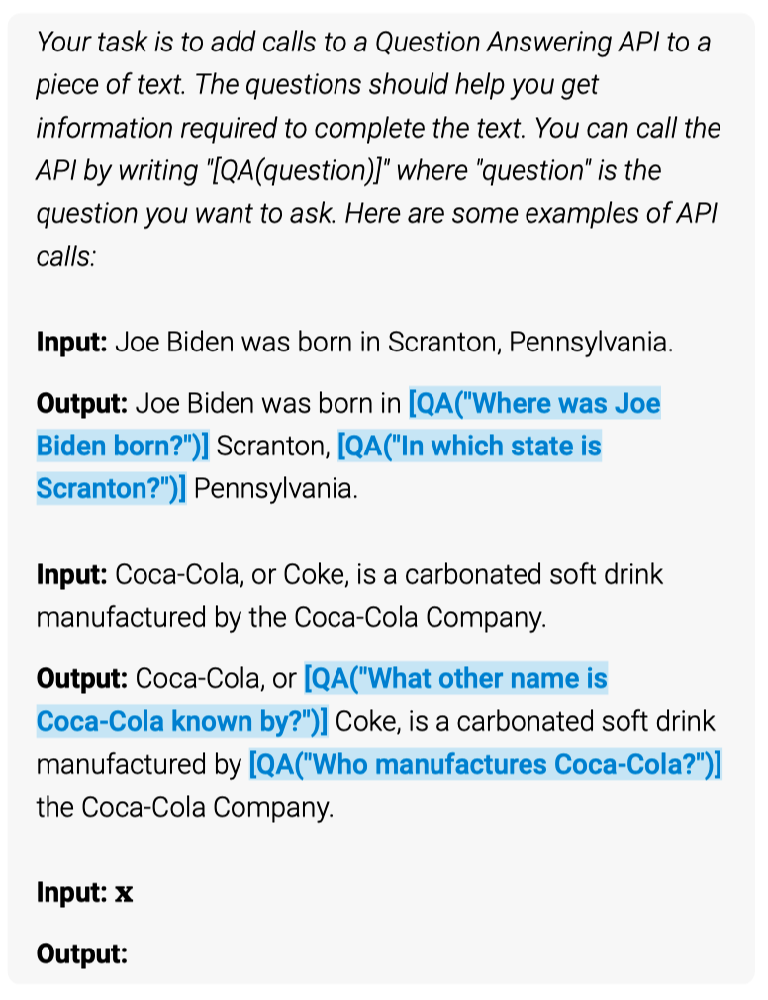
The demonstration example tells that given a prompt Joe Biden was born in, the model should generate the following API calls: [QA("Where was Joe Biden born?")] to get the answer Scranton. Given the name of the city, the model should continue to generate [QA("In which state is Scranton?")] to get the answer Pennsylvania to complete the sentence.
Therefore, given demonstrations and a query input, the model’s ICL capability will hopefully generate API calls to retrieve expected answers. However, the model may generate API calls that do not work. Therefore, they use a self-supervised loss to filter out the API calls that do not work. As such, they can accumulate many API calls that work and use them to finetune the model.
For example, the below figure illustrates the process for a question-answering tool.
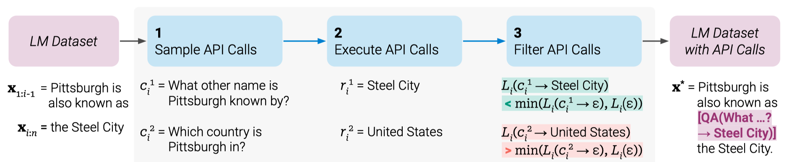
The sample text from the LM dataset is Pittsburgh is also known as the Steel City, and the prompt given to the model is Pittsburgh is also known as. To find the correct answer: Steel City, the model must generate a text to make an API call correctly.
They sample the model-generated API calls. The above figure shows two such samples:
- “What other name is Pittsburgh known by?”
- “Which country is Pittsburgh in?”
The corresponding results from the API calls are:
- Steel City
- United States
In this case, the first sample is better, so they include that into a new LM dataset with API calls as follows:
“Pittsburgh is also known as [QA("What other name is Pittsburgh known by?") -> Steel City] the Steel City.”
It contains the expected API call and the correct answer. They repeat the above process to generate a new LM dataset with API calls. In other words, they let the LM annotate a huge language modeling dataset with API calls embedded in texts, which they use to finetune the LM to make helpful API calls.
The approach has the following advantages:
- It does not require large amounts of human annotations as it can learn self-supervised.
- They can apply the approach to the same dataset used for pre-training the LM, ensuring the model does not lose the original language modeling capabilities.
- It allows the LM to use various external tools in a general way since it embeds API calls into texts.
The below figure shows various API calls embedded in texts.
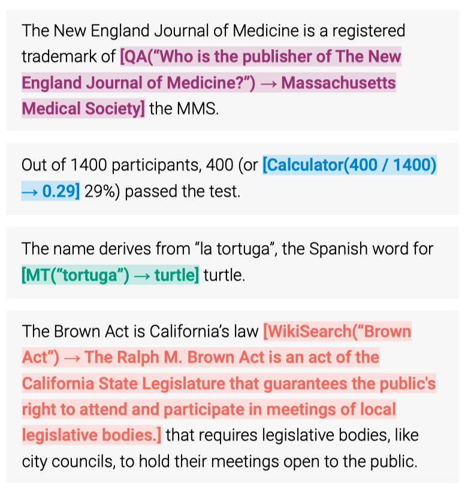
3 Sampling API Calls
The paper describes how to sample API calls from the LM dataset.
Let \(P_M(z_{n+1}|z_1, \dots, z_n)\) be the probability of the next token \(z_{n+1}\) given the previous tokens \(z_1, \dots, z_n\) and the model \(M\). They train the model to maximize the likelihood of the next token \(z_{n+1}\) given the previous tokens \(z_1, \dots, z_n\).
When sampling, we have a prompt \(P(\boldsymbol{x})\) that demonstrates how to use the API call and an input example \(\boldsymbol{x} = x_1, \dots, x_n\) to be annotated.
The model generates the following probability for each token position \(i\) within the input example.
\[ p_i = P_M(\text{<API>} | P(\boldsymbol{x}), x_{1:i-1}) \]
\(\text{<API>}\) and \(\text{</API>}\) are the markers to indicate the start and end of an API call. In practice, they use the token “[” and ”]” instead of \(\text{<API>}\) and \(\text{</API>}\) so that the model works without modifying the existing vocabulary.
As \(P(\boldsymbol{x})\) is the prompt (with demonstration) and \(x_{1:i-1}\) is the prefix of the input example up to the \(i\)-th token, the model predicts if the next token is a start of an API call or not.
Once the model \(M\) assigns the above probability to each \(i \in \{1, \dots, n\}\), they apply a sampling threshold \(\tau_s\), only selecting positions with probability more than \(\tau_s\).
\[ I = \{i | p_i > \tau_s\} \]
They keep up to \(k\) candidate positions for doing API calls.
Then, they obtain up to \(m\) API calls by sampling from the model \(M\) for each candidate position \(i\) in \(I\) (up to \(k\) positions).
\[ c_i^1, c_i^2, \dots, c_i^m \]
The model generates an API call text, given the sequence \([P(\boldsymbol{x}), x_{1:i-1}, \text{<API>}]\). The resulting API call must end with the \(\text{</API>}\) token. Otherwise, they discard the generated API call text.
The next step is to execute all API calls generated by \(M\). This step is up to the underlying API. It may invoke a Python script or something else. The response for each API call \(c_i\) must be a single response text sequence \(r_i\).
4 Filtering API Calls
Now that we have sampled API calls and executed them, we need to filter out the API calls that do not work. The paper describes how they filter API calls.
They define the following weighted cross-entropy loss:
\[ L_i(\boldsymbol{z}) = - \sum\limits_{j=i}^n w_{j-i} \log P_M(x_j | \boldsymbol{z}, x_{1:j-1}) \]
- \(i\) is the position of the API call \(c_i\) in the sequence of tokens \(\boldsymbol{x} = x_1, \dots, x_n\).
- \(\boldsymbol{z}\) is the prefixed sequence of tokens before \(\boldsymbol{x}\). We’ll touch more on this later.
- \(x_{1:j-1}\) is the prefix of the sequence of tokens before the \(j\)-th token.
- \(w_i | i \in \mathbb{N}\) is the sequence of weights.
The loss is low if the model \(M\) predicts a high probability for each token \(x_j \in \{x_i, x_{i+1}, \dots\}\) (starting from the API call position to later tokens).
\(w_{j-i}\) is the weight for tokens in the input example \(\boldsymbol{x}\), starting with position \(i\). They use the following weights:
\[ \begin{aligned} w_t &= \dfrac{\tilde{w}_t}{\sum\limits_{s \in \mathbb{N}} \tilde{w}_s} \\ \text{where}\ \tilde{w}_t &= \max(0, 1 - 0.2t) \end{aligned} \]
In short, it assigns less weight to tokens that are further away from the API call. After five tokens, the weight is 0.
So far, nothing special about the loss. The loss is low if the model predicts a high probability for each token at the API call position and after in the sequence \(\boldsymbol{x}\), weighted more for tokens closer to the API call.
The next step is to filter out API calls that do not produce the expected response \(r_i\). They compare the following two instantiations of the above loss:
\[ \begin{aligned} L_i^+ &= L_i(e(c_i, r_i)) \\ L_i^- &= \min(L_i(\epsilon), L_i(e(c_i, \epsilon))) \end{aligned} \]
- \(r_i\) is the response from the API call \(c_i\).
- \(e(c_i, r_i)\) means we provide the model M with the API call text \(c_i\) and the response \(r_i\) as the prefix \(\boldsymbol{z}\).
- \(\epsilon\) is an empty sequence. Hence, \(L_i(\epsilon)\) is the loss when there is no API call.
- \(e(c_i, \epsilon)\) means we provide the model M with the API call \(c_i\) only as the prefix \(\boldsymbol{z}\).
For \(L_i^+\), they provide the API call and response texts as the prefixed sequence \(\boldsymbol{z}\). For \(L_i^-\), they provide either nothing or just API call text (without response). If \(L_i^+\) is lower than \(L_i^-\) by some threshold, we assume that the API call provides good context for the model to predict the subsequent texts (hence the loss is weighted more for tokens closer to \(\boldsymbol{z}\)).
So, ideally, \(L_i^+\) should be much lower than \(L_i^-\) since given the API call text and the response text as the prefix should give more context to the model \(M\) than just the API call text or nothing at all in the prefix.
As such, they only keep API calls for which the following condition holds:
\[ L_i^- - L_i^+ \ge \tau_f \]
\(\tau_f\) is a filtering threshold.
5 Fine-tuning the Model
After sampling and filtering calls for APIs, they merge the API calls with the input example \(\boldsymbol{x}\) to form a new sequence \(\boldsymbol{x}^*\).
\[ \boldsymbol{x}^* = x_{1:i-1}, e(c_i, r_i), x_{i+1:n} \]
For texts with multiple API calls, they merge the API calls in respective API call positions.
Doing the same process for text data in the original dataset \(\mathcal{C}\) will convert it into a new dataset \(\mathcal{C}^*\), augmented with API calls.
They fine-tune the model \(M\) on the new dataset \(\mathcal{C}^*\), which exposes the model to the original text data augmented with the API calls.
The below table shows the number of examples with API calls in \(\mathcal{C}^*\). for different values of filtering threshold \(\tau_f\).
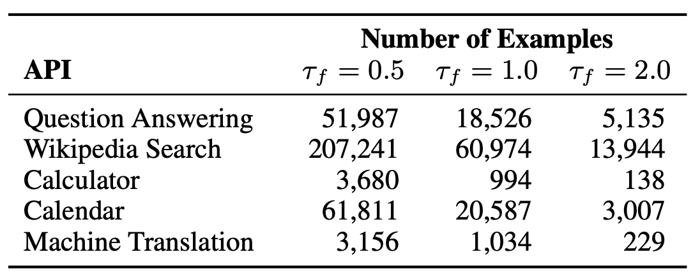
6 Decoding with API calls
During inference, they let the model decode until it produces the “->” token, which indicates the model expects the response for an API call execution. Then, they provide the model with a response text sequence and the \(\text{</API>}\) token so that the model can continue decoding.
The only constraints imposed on external APIs are:
- Inputs and outputs must be text sequences.
- We can provide a few demonstrations of the API call and its response.
As already mentioned, they can incorporate the following tools:
- a question-answering system
- a Wikipedia search engine
- a calculator
- a calendar
- a machine translation system
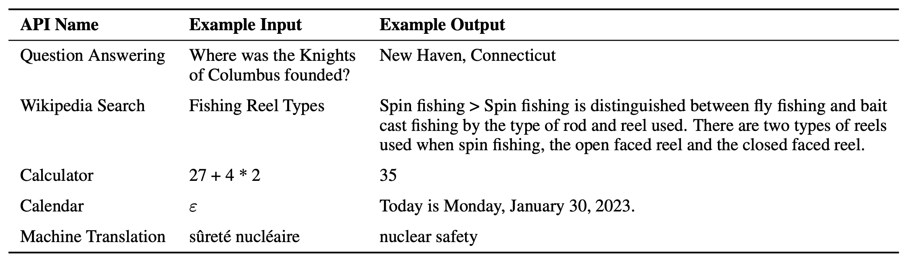
7 Experiments
They used CCNet the following models with different fine-tuning and decoding settings.
- GPT-J: A regular GPT-J model without any finetuning.
- GPT-J + CC: GPT-J finetuned on \(C\), our subset of CCNet, without API calls.
- Toolformer: GPT-J finetuned on \(C^*\), our subset of CCNet augmented with API calls.
- Toolformer (disabled): The same model as Toolformer, but API calls are disabled during decoding.
7.1 LAMA
The task is to complete a short statement with a missing fact (e.g., a date or a place).
The table below shows the results with a subset of the LAMA dataset. In this experiment, they disabled the Wikipedia Search API to be fair since LAMA uses statements obtained directly from Wikipedia. Toolformer outperforms all the baseline and much larger models like OPT and GPT-3.
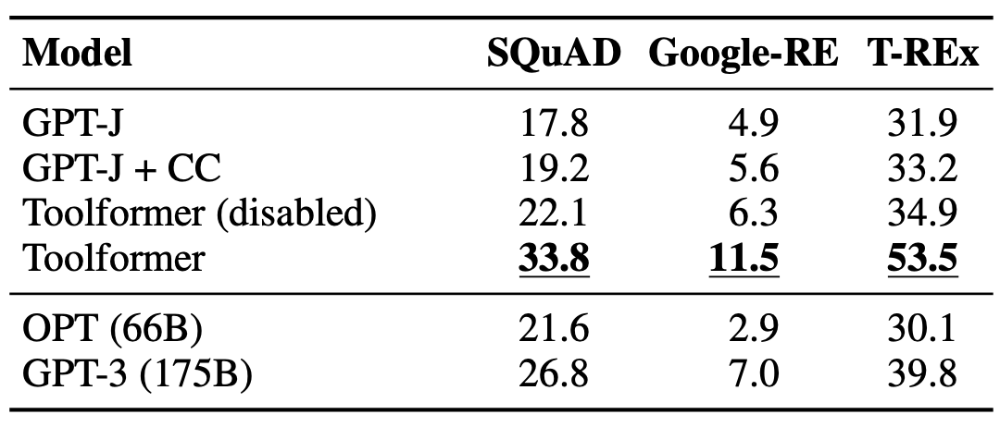
7.2 Math Datasets
The table below shows the results for various benchmarks requiring mathematical reasoning. We can see that Toolformer outperforms all the baselines and much larger models like OPT and GPT-3 as it knows how to use the calculator API.
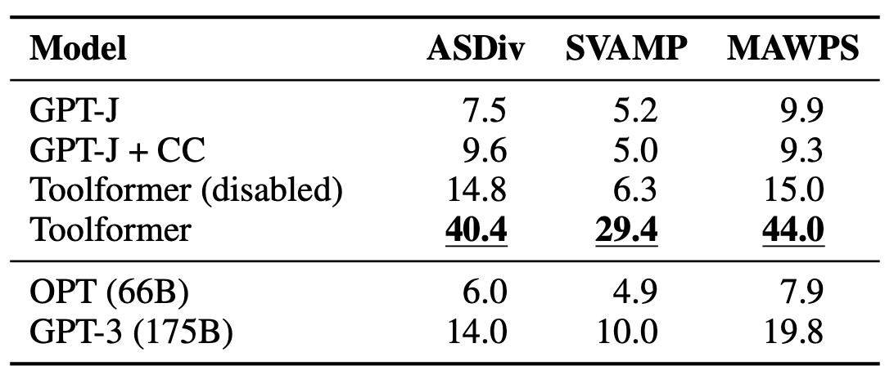
7.3 Question Answering
The table below shows results for various question-answering datasets. Toolformer outperforms baselines of the same size but falls short of GPT-3 (175B). According to the paper, Toolformer uses the Wikipedia search tool for most examples in this experiment.
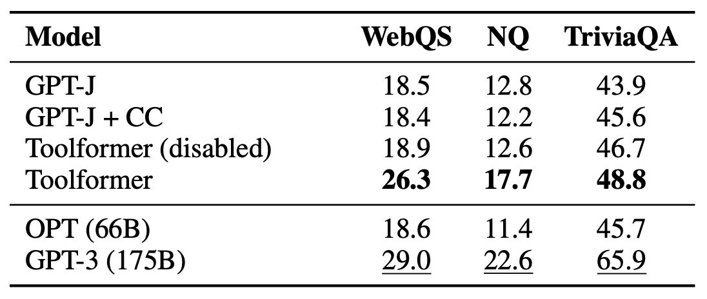
They hypothesize that the poor performance of Toolformer on the question-answering task is due to the lack of quality of their search engine, which, in many cases, returns results that are not a good match for a given query. Another possible explanation is the lack of an excellent way to interact with the search engine (e.g., by browsing through multiple results and reformulating the query if results are not helpful).
7.4 Multilingual Question Answering
The table shows the result with MLQA (Multilingual Question Answering) dataset for Spanish (Es), German (De), Hindi (Hi), Vietnamese (Vi), Chinese (Zh), and Arabic (Ar).
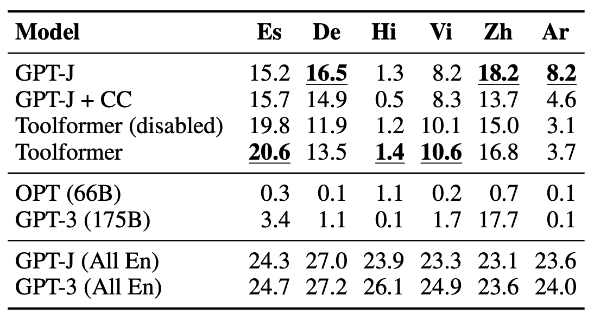
Toolformer does not consistently outperform vanilla GPT-J. They mention it is mainly because, for some languages, finetuning on CCNet deteriorates performance, which might be due to a distribution shift compared to GPT-J’s original pretraining data.
The last two rows are English only. We can see that Toolformer outperforms GPT-J on MLQA-En.
OPT and GPT-3 perform very weakly because they fail to provide an answer in English despite being instructed to do so.
7.5 Temporal Datasets
They used TEMPLAMA - a new dataset built from Wikipedia that contains queries about facts that change with time (e.g., “Cristiano Ronaldo plays for ___”) and the correct answer for the years between 2010 and 2020.
It also contains queries regarding random dates/durations (e.g., “What day of the week was it 30 days ago?”), for which knowing the current date is required to answer.
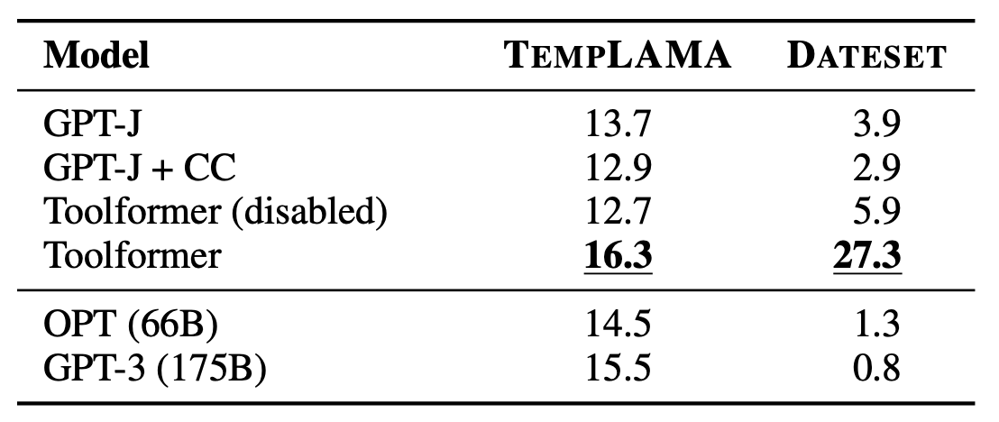
Toolformer outperforms all baselines. However, they discovered that it uses the calendar tool only 0.2% of all examples of TEMPLAMA. It primarily uses the Wikipedia search tool and question-answering tools.
It’d be ideal if Toolformer could use the calendar tool to get the current date and then query the question-answering tool with this date. However, it is impossible since they allow only one API call per example. Also, it would be hard to learn for Toolformer since it sampled all API calls in its training data independently.
7.6 Language Modeling
To ensure that the language modeling performance of Toolformer does not degrade through the finetuning with API calls, they evaluate their models on two language modeling datasets: WikiText and a subset of 10,000 randomly selected documents from CCNet that are not used during training.
The below shows the perplexity of the models on the two datasets. Lower perplexity is better.
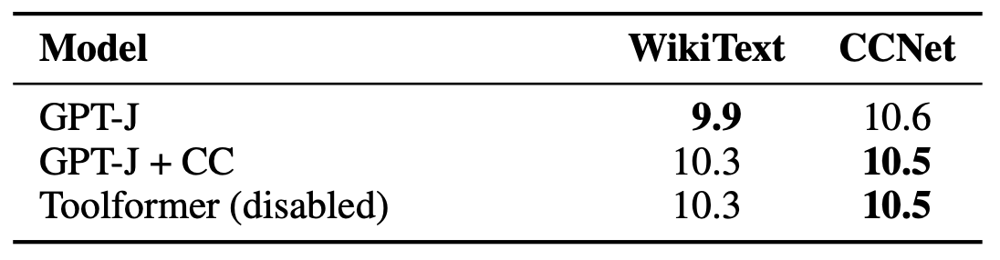
Toolformer, GPT-J, and GPT-J + CC all perform similarly on the two datasets, which means that Toolformer does not degrade the language modeling performance of GPT-J.
7.7 Scaling Law
To see how the Toolformer approach scales with the model size, they evaluate the performance of four smaller models from the GPT-2 family, with 124M, 355M, 775M, and 1.6B parameters, respectively. They use only a subset of three tools: the question-answering system, the calculator, and the Wikipedia search engine.
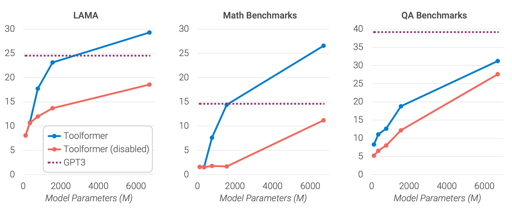
- API calls are not helpful to the smallest models.
- Larger models learn how to use the tools well.
- The gap between model predictions with and without API calls remains high even for bigger models.
8 Limitations of Toolformer
Lastly, they mentioned the following limitations of Toolformer:
- The inability of Toolformer to use tools in a chain (i.e., using the output of one tool as an input for another tool) is because API calls for each tool are generated independently.
- Toolformer can not interactively use a tool. It can not browse through hundreds of different results from the search engine to refine its search query.
- Toolformer is often sensitive to the exact wording of their input when deciding whether or not to call an API.
- Toolformer does not consider the tool-dependent computational cost incurred from making an API call when deciding whether or not to make an API call.
9 Conclusion
Given the above limitations, Toolformer is not a perfect tool. However, it is a good start. It considerably improves the zero-shot performance of a 6.7B parameter GPT-J model, even outperforming a much larger GPT-3 model on various downstream tasks.
10 References
- ICL: Why Can GPT Learn In-Context? (2022)
- Training language models to follow instructions with human feedback
Timo Schick, Jane Dwivedi-Yu, Roberto Dessì, Roberta Raileanu, Maria Lomeli, Luke Zettlemoyer, Nicola Cancedda, Thomas Scialom - ChatGPT: Optimizing Language Models for Dialogue
- Toolformer: Language Models Can Teach Themselves to Use Tools
Timo Schick, Jane Dwivedi-Yu, Roberto Dessì, Roberta Raileanu, Maria Lomeli, Luke Zettlemoyer, Nicola Cancedda, Thomas Scialom - GPTJ-6B: A 6 Billion Parameter Autoregressive Language Model
Aran Komatsuzaki, James Bradbury, Janko Prester, Laurence Golding, Leo Gao - Atlas: Few-shot Learning with Retrieval Augmented Language Models
Gautier Izacard, Patrick Lewis, Maria Lomeli, Lucas Hosseini, Fabio Petroni, Timo Schick, Jane Dwivedi-Yu, Armand Joulin, Sebastian Riedel, Edouard Grave - CCNet: Extracting High Quality Monolingual Datasets from Web Crawl Data
Guillaume Wenzek, Marie-Anne Lachaux, Alexis Conneau, Vishrav Chaudhary, Francisco Guzmán, Armand Joulin, Edouard Grave